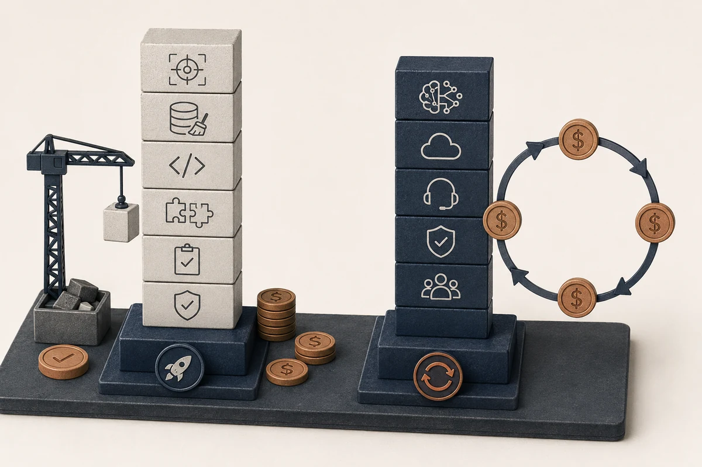

Гайд · ИИ для бизнеса
Сколько стоит внедрение ИИ в компанию: бюджет, статьи расходов и калькулятор
Практический бюджетный ориентир для руководителя: сколько стоит пилот по ИИ, рабочий запуск, поддержка, API, данные и интеграции.
Автор · проверено 21 мая 2026 г.
Содержание
Краткое резюме
По неправительственной оценке Дмитрия Григоренко на форуме Data Fusion 2026, российский бизнес в 2025 году потратил на внедрение и применение ИИ 257 млрд ₽, а Gartner в июле 2024 года прогнозировал, что не менее 30% проектов генеративного ИИ будут остановлены после проверки концепции до конца 2025 года. Для руководителя это означает: цена подписки, API или облачного тарифа закрывает только модельный слой. Основной бюджет уходит на выбор процесса, подготовку данных, интеграции с CRM/1С/сайтом/почтой, безопасность, тестирование, обучение команды и поддержку после запуска.
Для малого и среднего бизнеса практический ориентир на май 2026 года такой:
| Формат внедрения | Разовый бюджет запуска | Ежемесячная поддержка |
|---|---|---|
| Командное использование готовых сервисов ИИ | 0–80 тыс. ₽ | 5–60 тыс. ₽ |
| Пилот на конструкторах | 80–350 тыс. ₽ | 15–100 тыс. ₽ |
| ИИ-бот или ассистент по базе знаний | 250 тыс.–1,2 млн ₽ | 40–250 тыс. ₽ |
| ИИ-агент с действиями в CRM, почте, таблицах или системе поддержки | 600 тыс.–2,5 млн ₽ | 80–500 тыс. ₽ |
| Индивидуальная ИИ-система с несколькими интеграциями, логами и контролем | 2,5–10+ млн ₽ | 300 тыс. ₽ и выше |
Эти диапазоны подходят для первичного планирования. Реальная смета зависит от процесса, качества данных, числа интеграций, требований к безопасности, объёма запросов и выбранного уровня: пилот, рабочая автоматизация или единая ИИ-инфраструктура.
Главная формула бюджета: стоимость внедрения ИИ = проектирование + данные + разработка + интеграции + API/модели + контроль качества + поддержка + время команды.
Для проверки гипотезы берите один процесс, одну метрику и пилот на 30–60 дней. Такой старт помогает понять экономику до крупной разработки. Общую последовательность внедрения разбираю в базовом гайде: как внедрить ИИ в бизнес в 2026 году.
Практический следующий шаг
Сначала посчитайте один процесс
Выберите один процесс, текущую стоимость операции и метрику, которую должен изменить пилот по ИИ.
Оставить заявку на разборПочему бюджет проекта шире цены нейросети
Руководитель часто начинает вопросом: «Сколько будет стоить ChatGPT, Claude, GigaChat или YandexGPT для нашей компании?» Это понятный вопрос, но он слишком узкий.
Модель отвечает на запросы. Бизнес-эффект появляется только тогда, когда модель встроена в процесс:
- получает правильные данные;
- понимает правила компании;
- работает в нужном интерфейсе;
- умеет передавать задачу человеку;
- пишет логи;
- имеет лимиты расходов;
- регулярно проверяется по качеству.
При отсутствии этих элементов компания получает доступ к инструменту для личной продуктивности. Экономика отдела меняется после связки «данные → действие → контроль → владелец результата».
В 2025 году российский бизнес, по неправительственной оценке, потратил на внедрение и применение ИИ 257 млрд рублей. Gartner ещё в 2024 году предупреждал: к концу 2025 года часть проектов генеративного ИИ остановится после проверки концепции из-за слабых данных, рисков, расходов или размытой бизнес-ценности. Для собственника это простой сигнал: дорогим становится плохо выбранный проект.
Из чего складывается бюджет внедрения ИИ
Бюджет внедрения удобно делить на восемь блоков.
| Статья расходов | Что входит | Когда становится дорогой |
|---|---|---|
| Проектирование | выбор процесса, метрика, карта сценариев, требования | если у компании не описан процесс и нет владельца результата |
| Данные | выгрузка, очистка, база знаний, разметка, примеры правильных ответов | если данные лежат в разных системах и не имеют структуры |
| Модель и API | токены, подписки, облачные модели, эмбеддинги, распознавание речи, OCR | если много обращений, длинные документы, голос, изображения или агентные циклы |
| Интеграции | CRM, 1С, сайт, телефония, почта, система поддержки, BI, базы данных | если нужны права доступа, двусторонние действия и отказоустойчивость |
| Интерфейс | бот, виджет на сайте, внутренний кабинет, админка, форма проверки | если нужен удобный рабочий продукт для ежедневного использования |
| Безопасность | доступы, обезличивание, хранение логов, 152-ФЗ, коммерческая тайна | если ИИ работает с клиентскими, финансовыми, HR или юридическими данными |
| Контроль качества | тестовые выборки, метрики, human-in-the-loop, журнал ошибок | если ошибка ИИ может уйти клиенту или повлиять на деньги |
| Поддержка | мониторинг, обновление промптов, исправления, доработка базы знаний | если процесс живой и правила меняются каждую неделю |
На старте чаще всего недооценивают данные, интеграции и поддержку. Тариф модели заметен в счёте, но качество проекта обычно решают эти три блока.
Сколько стоит быстрый пилот по ИИ
Пилот нужен для короткой проверки экономического смысла. Нормальный горизонт — 30–60 дней. За это время команда должна получить ответы на пять вопросов:
- Может ли ИИ решать задачу с приемлемым качеством?
- Есть ли у компании данные для стабильной работы?
- Сколько времени или денег реально экономится?
- Где возникают ошибки и кто их исправляет?
- Какое решение принимать дальше: остановка, доработка или рабочий запуск?
Ориентиры бюджета:
| Тип пилота | Что делаем | Разовый бюджет | Ежемесячные расходы |
|---|---|---|---|
| Лёгкий пилот без интеграций | инструкции, промпты, таблица качества, ручная проверка | 0–80 тыс. ₽ | 5–40 тыс. ₽ |
| Пилот на конструкторах | связка формы, таблицы, CRM, Telegram или почты через Make, n8n и аналоги | 80–250 тыс. ₽ | 15–80 тыс. ₽ |
| Пилот ИИ-бота | база знаний, тестовый бот, простая эскалация к оператору | 150–500 тыс. ₽ | 30–150 тыс. ₽ |
| Пилот ИИ-агента | цепочка действий, ограниченные права, логи, ручное подтверждение | 300 тыс.–1 млн ₽ | 60–250 тыс. ₽ |
Крупная разработка до проверки процесса создаёт лишний риск. Для первого проекта сильнее всего помогают быстрая проверка метрики, ясный владелец процесса и короткий список сценариев.
Сколько стоит рабочее внедрение
Рабочее внедрение выдерживает реальные данные, сотрудников, клиентов, ошибки и нагрузку. В смете появляются требования, которые редко нужны на демо:
- роли и доступы;
- резервный сценарий, если модель или API недоступны;
- мониторинг стоимости;
- журнал входов, ответов и действий;
- тестовая выборка для проверки качества;
- управление промптами и версионирование;
- правила эскалации к человеку;
- инструкции для сотрудников;
- регулярное обновление базы знаний;
- ответственность владельца процесса.
Ориентиры:
| Уровень внедрения | Пример | Разовый бюджет | Поддержка в месяц |
|---|---|---|---|
| Командный ИИ-слой | сотрудники используют утверждённые инструменты, промпты и правила | 0–150 тыс. ₽ | 10–80 тыс. ₽ |
| Автоматизация одного процесса | заявки, обращения, документы, отчёты, контент-поток | 250 тыс.–1,5 млн ₽ | 50–300 тыс. ₽ |
| ИИ-агент с действиями | проверяет вход, создаёт задачу, пишет ответ, обновляет CRM | 600 тыс.–2,5 млн ₽ | 80–500 тыс. ₽ |
| Несколько связанных процессов | продажи + поддержка + аналитика + база знаний | 1,5–6 млн ₽ | 200 тыс.–1 млн ₽ |
| Корпоративная ИИ-платформа | единый слой данных, агентов, прав, логов и мониторинга | 6–20+ млн ₽ | 700 тыс. ₽ и выше |
Для малого бизнеса чаще всего достаточно первых двух уровней. Для среднего бизнеса разумный путь — один рабочий процесс, затем расширение на соседние сценарии. Для крупного бизнеса основная стоимость появляется в управлении риском, доступами, данными и масштабом.
Калькулятор бюджета внедрения ИИ

Чтобы оценить проект без иллюзий, считайте два бюджета: запуск и ежемесячную эксплуатацию.
Разовый бюджет запуска
| Блок | Как оценить |
|---|---|
| Диагностика процесса | 1–3 рабочих встречи, карта процесса, метрика, владелец |
| Проектирование решения | роли ИИ, сценарии, ограничения, архитектура данных |
| Подготовка данных | база знаний, выгрузки, очистка, примеры правильных ответов |
| Прототип | бот, цепочка автоматизации, API-сервис или внутренний интерфейс |
| Интеграции | CRM, таблицы, почта, телефония, система поддержки, сайт, 1С |
| Тестирование | тестовая выборка, проверка точности, сценарии ошибок |
| Запуск | инструкции, обучение, права доступа, мониторинг |
| Резерв | 15–30% на неизвестные проблемы |
Ежемесячный бюджет
| Блок | Как оценить |
|---|---|
| Модели и API | объём запросов × средний размер запроса и ответа × тариф модели |
| Сервисы автоматизации | Make, n8n, облако, хостинг, базы данных, storage |
| Поддержка | исправления, обновление базы знаний, доработка промптов |
| Контроль качества | выборочная проверка ответов, разбор ошибок, отчётность |
| Наблюдаемость | логи, алерты, мониторинг расходов и качества |
| Время команды | владелец процесса, оператор, аналитик, руководитель |
Простая формула
Бюджет запуска = проектирование + данные + разработка + интеграции + тестирование + запуск + резерв.
Ежемесячная стоимость = API/модели + сервисы + поддержка + контроль качества + время команды.
Главное — считать не только деньги подрядчику. Время сотрудников тоже часть бюджета. Если руководитель продаж, маркетолог и оператор поддержки каждую неделю тратят часы на проверку пилота, это должно быть видно в экономике проекта.
Когда нужен разбор
Проверьте бюджет до разработки
Разложите проект на данные, интеграции, API, контроль качества и поддержку, чтобы не получить дорогой пилот без экономики.
Оставить заявкуПримеры бюджетов по сценариям
Кейс: ИИ-квалификация лидов в B2B-сервисе
Ситуация. B2B-сервис из сегмента «ИИ в России» получает 1 800 заявок в месяц через формы сайта и партнёрский трафик. Восемь менеджеров вручную читают каждую заявку, смотрят источник, оценивают потенциал и решают, кому звонить первым. Время до первого касания — 2 часа 40 минут, конверсия из заявки в звонок — 41%.
Что делает ИИ. Классифицирует лид по 7 признакам (отрасль, размер компании, источник, наличие задачи, бюджет, сроки, повторный визит), пишет краткую карточку, предлагает следующий шаг и передаёт менеджеру. Решение о звонке остаётся за человеком. Источники признаков — CRM, история обращений, форма, UTM, обогащение по ИНН.
Что нужно для пилота.
- выгрузка 6–12 месяцев истории заявок и исходов из CRM;
- 200–300 размеченных примеров «горячий / тёплый / нерелевантный»;
- доступ к CRM с правами на чтение и одно поле для ИИ-вердикта;
- режим human-in-the-loop: менеджер видит вердикт, но финал — за ним;
- лимит расходов на API и алерт на превышение.
| Статья | Ориентир |
|---|---|
| Проектирование и критерии лида | 40–120 тыс. ₽ |
| Подготовка CRM-истории и примеров | 50–200 тыс. ₽ |
| Прототип классификатора | 80–250 тыс. ₽ |
| Интеграция с CRM/формами | 100–500 тыс. ₽ |
| Тестирование и запуск | 50–200 тыс. ₽ |
| Итого запуск | 320 тыс.–1,27 млн ₽ |
| Поддержка и API в месяц | 50–250 тыс. ₽ |
Метрики пилота через 60 дней.
- время до первого касания по «горячим» лидам: 2 ч 40 мин → 18 мин;
- доля «горячих», ушедших к менеджеру в первые 30 минут: 14% → 71%;
- конверсия в звонок: 41% → 53%;
- средняя точность ИИ-вердикта (по выборке 200 заявок): 86%, ложноположительных «горячих» — 7%.
Бизнес-логика. Окупаемость считается по дополнительной выручке: каждый «горячий» лид, дошедший до звонка в первые 30 минут, конвертируется в сделку в среднем в 1,4 раза чаще. При среднем чеке проекта в сегменте и текущем объёме заявок такой пилот окупается на горизонте 3–5 месяцев. Если эффект меньше — пилот закрывается без перехода в рабочий контур. Дополнительный контекст по выбору процессов и метрикам ИИ — в гайде как внедрить ИИ в бизнес в 2026 году и в новостной ленте категории «ИИ-индустрия».
2. ИИ-бот поддержки по базе знаний
Ситуация. Поддержка отвечает на повторяющиеся вопросы: статус заказа, тарифы, возврат, условия, инструкции, документы.
Что делает ИИ. Отвечает по базе знаний, классифицирует обращение, передаёт сложные случаи оператору, пишет лог.
| Статья | Ориентир |
|---|---|
| Аудит обращений и базы знаний | 50–180 тыс. ₽ |
| Подготовка базы знаний | 80–350 тыс. ₽ |
| Прототип бота | 120–400 тыс. ₽ |
| Интеграция с системой поддержки, CRM, Telegram или сайтом | 150–700 тыс. ₽ |
| Контроль качества и передача оператору | 80–250 тыс. ₽ |
| Итого запуск | 480 тыс.–1,88 млн ₽ |
| Поддержка и API в месяц | 70–350 тыс. ₽ |
Когда окупается. Сокращается время первого ответа, операторы меньше тратят время на типовые обращения, качество ответов остаётся стабильным. Главный риск — уверенный ответ за пределами базы знаний, поэтому нужны ограничения и проверка.
3. Обработка документов с помощью ИИ
Ситуация. Компания вручную переносит данные из договоров, актов, счетов, заявок или анкет.
Что делает ИИ. Извлекает поля, сравнивает с правилами, подсвечивает ошибки, передаёт человеку спорные случаи.
| Статья | Ориентир |
|---|---|
| Анализ типов документов | 70–250 тыс. ₽ |
| Разметка примеров и правил проверки | 150–600 тыс. ₽ |
| Прототип извлечения данных | 200–700 тыс. ₽ |
| Интеграция с хранилищем/ЭДО/1С/CRM | 300 тыс.–1,5 млн ₽ |
| Проверка качества и журнал ошибок | 120–500 тыс. ₽ |
| Итого запуск | 840 тыс.–3,55 млн ₽ |
| Поддержка и API в месяц | 100–600 тыс. ₽ |
Когда окупается. Если документов много, ошибки дороги, а правила проверки можно формализовать. Для юридически значимых документов нужен режим «ИИ предлагает, человек утверждает».
Что влияет на цену сильнее всего
1. Данные
Хорошая база знаний снижает стоимость. Хаотичные документы, устаревшие инструкции, разные версии правил и неполная CRM-история увеличивают бюджет.
2. Интеграции
Ответ в чате стоит дёшево. Действие в бизнес-системе стоит дороже: нужно проверять права, статусы, ошибки, повторы, откаты и логи.
3. Риск ошибки
Если ошибка ИИ просто создаёт черновик, риск низкий. Если ошибка уходит клиенту, влияет на деньги, договор, персональные данные или юридическое решение, стоимость контроля растёт.
4. Объём запросов
Небольшой пилот может иметь скромный API-бюджет. Но при тысячах обращений в день, длинных документах, голосовых расшифровках, изображениях или агентных циклах расходы растут быстро.
5. Требования к безопасности
Персональные данные, коммерческая тайна, финансы, HR, медицина и юридические документы требуют отдельной архитектуры доступа и хранения. Это увеличивает стоимость, но снижает риск.
6. Требования к SLA
Если ИИ помогает сотруднику, можно пережить задержку. Если ИИ-агент участвует в продаже, поддержке или документообороте, нужны мониторинг, резервный сценарий и понятная ответственность.
Как снизить стоимость без потери качества
Снизить бюджет помогает узкий первый контур автоматизации.
| Решение | Как снижает стоимость | Где осторожно |
|---|---|---|
| Начать с одного процесса | меньше интеграций и данных | не выбирать слишком мелкий процесс без экономического эффекта |
| Делать пилот на ручной проверке | меньше риска и требований к автоматизации | не выдавать пилот за рабочий контур |
| Использовать конструкторы | быстрее связать формы, таблицы и CRM | сложная логика может стать хрупкой |
| Сначала улучшить базу знаний | меньше ошибок модели | нужен владелец, который будет обновлять знания |
| Разделить модели по задачам | дешёвая модель для простого, сильная для сложного | нужна маршрутизация и проверка качества |
| Ограничить права ИИ-агента | дешевле контроль и ниже риск | часть действий останется у человека |
| Ввести лимиты расходов | удерживает API-бюджет от незаметного роста | лимиты должны быть на уровне процесса и в интерфейсе |
Практический подход: сначала сделать управляемый пилот, потом рабочий контур для одного процесса, потом масштабировать. Так компания покупает знание о своём процессе до дорогой архитектуры.
Когда внедрение ИИ не окупится
Есть сценарии, в которых дорогой ИИ дешевле не запускать вовсе. Чек-лист до старта пилота:
- Нет повторяемости процесса. Если задача — это поток разовых случаев без единых правил (юридические заключения по уникальным договорам, индивидуальные дизайн-проекты), пилот тратит бюджет на разметку, а на рабочем запуске выясняется, что обобщить нельзя.
- Нет владельца результата. Когда проект с ИИ подвешен между ИТ-отделом, маркетингом и операционным директором без явной ответственности за метрику, бюджет всё равно осваивается, а решение «продлевать или гасить» не принимается. По нашему наблюдению, это самая частая причина зависших пилотов на горизонте 6–9 месяцев.
- Процесс меняется чаще одного раза в месяц. ИИ обучается на статике: правила работы, инструкции, перечни услуг. Если они меняются раз в две недели, поддержка модели и базы знаний съест ту экономию, которую вы планировали получить.
- Регуляторно запрещено или близко к границе. Кредитные, кадровые увольнения, медицинские диагнозы, юридические заключения, обработка спецкатегорий персональных данных по 152-ФЗ — не первые проекты для ИИ. Здесь нужна отдельная архитектура согласований, аудит и человек-финальное звено.
- Нет SLA на критичный процесс. Если ИИ-агент обрабатывает заявки, но компания не готова держать резервный сценарий и человеческую эскалацию на случай отказа модели или API, риск отключения процесса перевешивает экономию.
- Объём данных не оправдывает разработку. Если речь о 30–50 заявках в месяц или 20 договорах в квартал, ROI индивидуальной системы почти всегда отрицательный — дешевле распределить задачи между сотрудниками с готовыми инструментами ИИ и подпиской.
Если вы попадаете в один из пунктов 1, 2, 3 или 5 — пилот стоит отложить или ограничиться лёгким сценарием на инструкциях и ручной проверке, без бюджета на разработку.
Какие расходы часто забывают
Время команды
Пилот требует участия владельца процесса, эксперта предметной области и людей, которые будут проверять ответы. Если команда не выделила время, проект зависнет.
Подготовку данных
База знаний сама себя не соберёт. Часто нужно вычистить документы, убрать дубли, обновить инструкции, собрать примеры правильных ответов и описать запретные темы.
Журнал ошибок
Без логов нельзя понять, почему ИИ ошибся. Логи нужны для качества, безопасности и разборов с командой.
Поддержку после запуска
Промпты, база знаний, интеграции и правила меняются. Если после запуска никто не отвечает за поддержку, качество будет снижаться.
Юридические и безопасностные проверки
Если ИИ работает с персональными данными, клиентскими переписками, договорами или финансами, нужно заранее понять, где хранятся данные, кто имеет доступ и что запрещено отправлять внешним сервисам.
Стоимость остановки
Иногда правильное решение — остановить пилот. Но это тоже нужно заложить: критерии остановки, фиксация выводов, перенос полезных наработок в следующий проект.
Вывод Malakhov AI
Вопрос «сколько стоит внедрение ИИ» лучше переформулировать: «какой процесс мы хотим улучшить, какую метрику изменить и какой уровень риска готовы контролировать».
Для быстрой проверки нормальный бюджет начинается с правильно выбранного пилота: один процесс, одна метрика, минимальные данные, ручная проверка, понятный stop/go через 30–60 дней.
Если нужен рабочий контур, бюджет растёт из-за интеграций, данных, прав доступа, логов и поддержки. Это нормально. Плохо, когда компания платит за сложность рабочего внедрения до доказанного эффекта процесса.
Рабочий порядок:
- Выбрать процесс с частой повторяемой задачей.
- Посчитать текущую стоимость процесса.
- Оценить данные и риски.
- Запустить пилот на 30–60 дней.
- Сравнить эффект с полной стоимостью владения.
- Масштабировать только после подтверждённой экономики.
ИИ становится дорогим, когда автоматизирует хаос. ИИ становится выгодным, когда встроен в понятный процесс с метрикой, владельцем и контролем качества.
FAQ
Сколько стоит внедрение ИИ в компанию?
Для малого и среднего бизнеса лёгкий пилот может стоить от 80–350 тыс. ₽, ИИ-бот или ассистент по базе знаний — примерно от 250 тыс. ₽ до 1,2 млн ₽, ИИ-агент с интеграциями — от 600 тыс. ₽ до 2,5 млн ₽. Кастомная система с несколькими интеграциями, логами и безопасностью может стоить 2,5–10+ млн ₽. Это ориентиры, а не фиксированный прайс.
Что дороже: модель или интеграции?
В большинстве бизнес-проектов дороже интеграции, данные, контроль качества и поддержка. Модель и API могут быть небольшой строкой бюджета на пилоте, но становятся заметными при большом объёме запросов, длинных документах, голосе, изображениях или агентных циклах.
Можно ли начать с 50–100 тысяч рублей?
Да. Такой бюджет подходит для лёгкого пилота: инструкции, промпты, ручная проверка, таблица качества, один процесс без сложных интеграций. Этого достаточно для проверки гипотезы и первичной экономики.
Сколько стоит ИИ-бот поддержки?
Простой пилот ИИ-бота может стоить 150–500 тыс. ₽. Рабочий бот с базой знаний, интеграцией с системой поддержки или CRM, передачей оператору, логами и контролем качества чаще попадает в диапазон 480 тыс.–1,9 млн ₽ на запуск плюс 70–350 тыс. ₽ в месяц на поддержку, сервисы и контроль.
Как считать ежемесячную стоимость ИИ?
Считайте модели/API, сервисы автоматизации, хостинг, хранение данных, мониторинг, поддержку, обновление базы знаний, проверку качества и время команды. Отдельно поставьте лимит расходов и алерт, чтобы рост запросов не превратился в неожиданный счёт.
Почему пилот дешевле рабочего внедрения?
Пилот допускает ручную проверку качества, корректности действий и работы с ошибками. Рабочее внедрение требует прав доступа, отказоустойчивости, логов, мониторинга, инструкций, безопасности, регулярной поддержки и ответственности за результат.
Как снизить стоимость внедрения ИИ?
Выберите один процесс, ограничьте права ИИ, начните с ручной проверки, используйте готовые сервисы или конструкторы там, где это безопасно, подготовьте базу знаний до разработки и не автоматизируйте сценарии с высоким риском первыми.
Когда нужна кастомная разработка?
Кастомная разработка нужна, когда ИИ должен работать с внутренними данными, выполнять действия в системах, соблюдать сложные права доступа, писать логи, выдерживать нагрузку или быть частью критичного бизнес-процесса. Для личной продуктивности и простых маркетинговых задач она часто не нужна.
Источники и данные
Цены и тарифы в инструментах ИИ быстро меняются. Этот материал подготовлен как практический бюджетный ориентир; тарифные факты проверены 20 мая 2026 года.
- CNews / Data Fusion, апрель 2026. Дмитрий Григоренко озвучил неправительственную оценку расходов бизнеса в России на внедрение и применение ИИ в 2025 году — 257 млрд ₽: https://www.cnews.ru/news/top/2026-04-08_dmitrij_grigorenko_biznes_1
- Gartner, июль 2024. Прогноз о том, что не менее 30% проектов генеративного ИИ будут остановлены после проверки концепции к концу 2025 года из-за данных, рисков, расходов или неясной бизнес-ценности: https://www.gartner.com/en/newsroom/press-releases/2024-07-29-gartner-predicts-30-percent-of-generative-ai-projects-will-be-abandoned-after-proof-of-concept-by-end-of-2025
- GigaChat API для юрлиц, обновлено 18 мая 2026. Тарифы pay-as-you-go, минимальный базовый тариф и пакеты токенов: https://developers.sber.ru/docs/ru/gigachat/tariffs/legal-tariffs
- Yandex AI Studio, правила тарификации. Стоимость моделей по режимам и токенам: https://aistudio.yandex.ru/docs/ru/ai-studio/pricing.html
- OpenAI API Pricing. API тарифицируется отдельно от ChatGPT-подписок; есть настройки бюджета и панель использования: https://openai.com/api/pricing/
- Anthropic Claude pricing. Модельная тарификация, prompt caching, Batch API и long context pricing: https://platform.claude.com/docs/en/about-claude/pricing
- Make pricing. Кредитная модель, планы и лимиты: https://www.make.com/en/pricing
- n8n pricing. Планы, executions и варианты hosted/self-hosted: https://n8n.io/pricing/
Дальше
Что можно сделать после чтения
Калькулятор проекта по ИИ
Разберите бюджет запуска и ежемесячной эксплуатации до выбора подрядчика.
Оставить заявкуAI-новости в Telegram
Ежедневный короткий дайджест: релизы, инструменты, кейсы внедрения ИИ в бизнес.
Подписаться на дайджестАрхитектурный разбор ИИ
Проверьте процесс, данные, риски и экономику до старта разработки.
Оставить заявкуЧто читать дальше